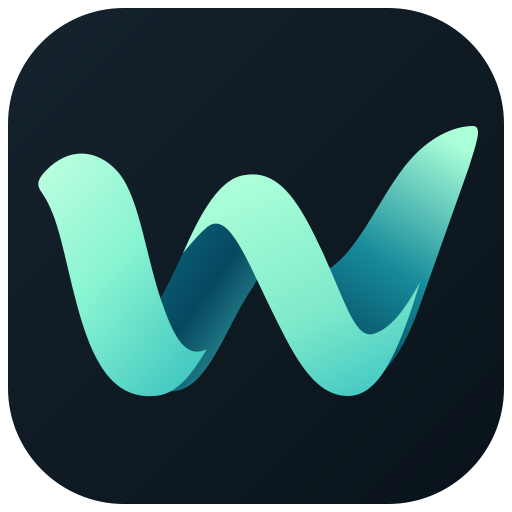
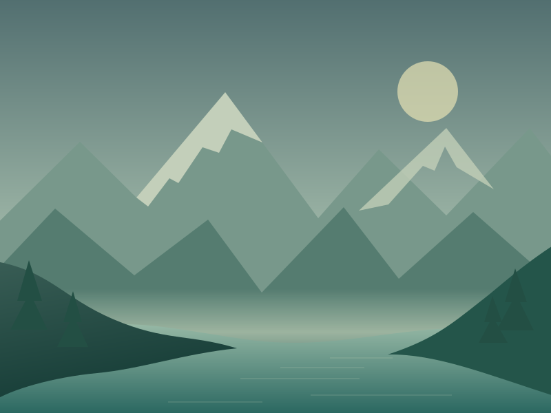
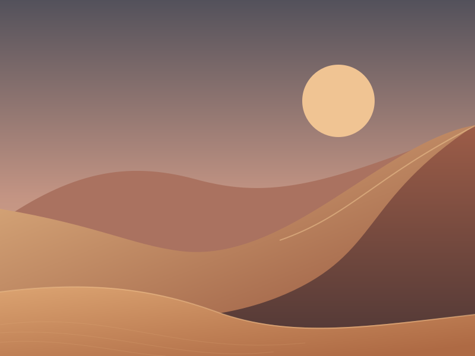
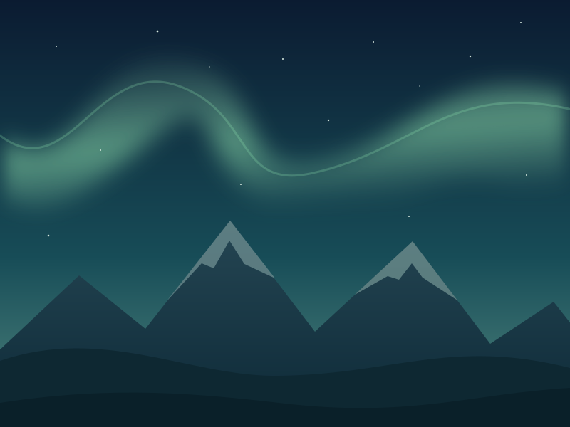

Подбор по интересам
Задай любимые темы в настройках — WallWave подберёт обои из подключённых источников. Или добавь папку со своими изображениями.
naturespaceminimalism

WallWave. GitHubТвой рабочий стол. Твои интересы.
Задай свои интересы.
Сохраняй любимое. Меняй фон под настроение — или доверь смену WallWave.

Там, где тише ♡
Тёплый горизонт ♡
После заката ♡Иллюстрация интерфейса и обоев
Не просто новая картинка.
Место, в которое приятно вернуться.
Горы, иллюстрации, космос или собственные фотографии.
Собери рабочий стол вокруг того, что близко тебе.
01 / Подбор с характером
Начни с настройки интересов.
Остальное подключай, когда захочется.
Задай любимые темы в настройках — WallWave подберёт обои из подключённых источников. Или добавь папку со своими изображениями.
Сохраняй понравившееся, откладывай на потом и убирай лишнее. Оценки помогают уточнять подбор.
Включи автоматическую смену по интервалу или расписанию. Для нескольких мониторов доступны отдельные настройки.
Wallhaven · NASA Images · Wikimedia Commons · личные папки · и другие
Необязательный локальный ИИ
Отмечай, что нравится и что нет. Когда накопится достаточно оценок, локальная модель поможет находить визуально близкие изображения.
Анализ выполняется на компьютере. Изображения и оценки не отправляются внешнему ИИ. Интернет нужен для онлайн-источников и первой загрузки модели.
Что нужно для ИИ02 / Всё начинается с интереса
Программировать не нужно.
Начни без ИИ и автоматизации.
Открой WallWave.exe, выбери папку для приложения и дождись первого запуска.
В настройках укажи несколько тем, например nature, mountains, space. Для начала подойдёт Wallhaven.
Нажми «Ручная загрузка обоев», открой понравившееся изображение и выбери «Установить».
ИИ и автоматическая смена изначально выключены. Ты решаешь, когда их включить.
03 / Добавь немного своего
WallWave для Windows.
Бесплатно, с открытым исходным кодом.
Приложение развивается. В тестовой версии возможны ошибки — о них можно сообщить на GitHub.
Нет. Подбор по заданным интересам, личные папки, оценки и автоматическая смена доступны без ИИ. Локальную модель можно включить позже. Её подбор вероятностный и не гарантирует совпадения с твоим вкусом.
Для базового подбора SFW на Wallhaven и работы с личными папками отдельный аккаунт WallWave не нужен. Некоторые другие источники, например Pixabay и DeviantArt, требуют собственных ключей доступа. Условия показаны в настройках источников.
Обои, оценки, настройки и ключи хранятся в пользовательской библиотеке на компьютере. Онлайн-источники получают запросы поиска и загрузки, а при первом включении ИИ скачивается модель с Hugging Face. Поэтому локальный ИИ не означает полное отсутствие сетевых запросов. Подробнее о хранении данных ↗
Да. В разделе «Источники» добавь локальную папку и укажи папку с изображениями. Можно использовать только свои файлы и не подключать онлайн-источники.
На этой странице доступна версия для Windows. Отдельная Android-версия находится в разработке; кнопка скачивания появится, когда будет готов публичный выпуск. Готовые версии для macOS и Linux здесь не предлагаются.
Права на обои остаются у их авторов. Наличие изображения в источнике не означает разрешения на любое использование. Проверяй лицензию на исходной странице: ссылку можно открыть из карточки обоев в приложении.